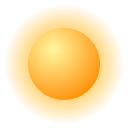

Misiones
Satélites, exploración y vuelos tripulados, del pasado y de hoy.
Ver misionesEn Nexus-Cosmos nos encargamos de publicar la información más actualizada de las misiones espaciales de todo el mundo.
Satélites, exploración y vuelos tripulados, del pasado y de hoy.
Ver misiones
Datos curiosos del universo y una tabla para consultar.
DescubrirConoce al autor del sitio y escríbenos un mensaje.
Escribir